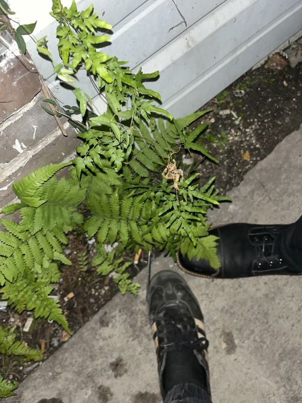

Lygodiaceae
Climbing Fern Family
The Lygodiaceae is a unique family of ferns within the order Schizaeales, containing the single genus Lygodium. These ferns are distinguished by their remarkable climbing habit, where the frond rachis (main axis) exhibits indeterminate growth and twines around supporting structures, allowing the plant to reach significant heights. Found in tropical and subtropical regions worldwide, some species have become invasive outside their native range.
Overview
Lygodiaceae stands out among fern families due to the vining nature of its sole genus, Lygodium. Unlike typical ferns with determinate fronds, Lygodium possesses a primary rachis that functions like a vine, twining and growing indefinitely, sometimes forming dense thickets. Pinnately compound pinnae, which are determinate (of limited growth), branch off this main climbing axis.
These ferns grow from subterranean, creeping, hairy rhizomes. They are typically found in moist, disturbed areas, forest edges, swamps, and along waterways in tropical, subtropical, and warm-temperate climates. The ability to climb allows them to access sunlight in shaded understories or rapidly colonize open areas.
While fascinating botanically, several Lygodium species, notably L. japonicum (Japanese climbing fern) and L. microphyllum (Old World climbing fern), have become serious invasive weeds in regions like the southeastern United States. Their rapid growth, prolific spore production, and ability to smother native vegetation pose significant ecological challenges.
Quick Facts
- Scientific Name: Lygodiaceae
- Common Name: Climbing fern family
- Number of Genera: 1 (Lygodium)
- Number of Species: Approximately 25-40
- Distribution: Pantropical and subtropical, extending into some warm-temperate regions.
- Evolutionary Group: Polypodiopsida (Leptosporangiate Ferns) - Schizaeales
Key Characteristics
Growth Form and Habit
The defining characteristic is the climbing habit. Plants grow from creeping, subterranean rhizomes covered in hairs. The frond itself functions as the climbing structure.
Fronds (Leaves)
Fronds are highly specialized:
- Indeterminate Rachis: The primary frond axis (rachis) exhibits indeterminate growth, twining around supports (stems, fences, etc.) like a vine. It can reach lengths of many meters (up to 30m in some species).
- Determinate Pinnae: Short stalks arise from the rachis, each bearing a pair of pinnae (primary leaflets). These pinnae are determinate in growth and are typically pinnately or palmately compound.
- Dimorphism: Fronds can be dimorphic or subdimorphic, with fertile pinnae sometimes slightly contracted or differing in segment shape compared to sterile pinnae.
Sporangia and Fertile Structures
Sporangia are borne on specialized structures along the margins of fertile segments:
- Sorophores: Sporangia occur singly in two rows on small, finger-like marginal lobes called sorophores.
- Exindusiate: There is no true indusium, although each sporangium is typically covered by a small flap formed from the reflexed tissue of the sorophore lobe, acting as a pseudo-indusium.
- Sporangia Structure: Sporangia are relatively large, sessile or nearly so, with a transverse, apical or subapical annulus.
Spores
Spores are trilete (tetrahedral), typically yellowish, and ornamentation varies from nearly smooth (psilate) to finely textured (verrucate, tuberculate, or reticulate depending on species).
Gametophytes
Gametophytes are typically terrestrial, surface-dwelling, green, and cordate (heart-shaped) or somewhat elongate/straplike.
Field Identification
Identifying Lygodiaceae (Lygodium) is usually straightforward due to its unique climbing growth form, unlike any other fern in most regions.
Primary Identification Features
- Climbing Habit: Look for a fern that is clearly climbing via a twining main stem (the rachis).
- Indeterminate Rachis / Determinate Pinnae: Observe the long, vining main axis with distinct, compound leafy structures (pinnae) branching off it.
- Marginal Sorophores: Examine the edges of fertile leaflets for the characteristic small lobes (sorophores) bearing the sporangia.
- Hairy Rhizome/Stipe Base: Check near the ground for hairy structures, not scales.
Secondary Identification Features
- Pinna Structure: Note whether the pinnae are pinnately or palmately compound, and the shape of the ultimate segments.
- Habitat: Often found in moist, disturbed areas, along edges, or climbing over shrubs and trees.
Seasonal Identification Tips
Can be identified year-round in warmer climates where fronds persist.
- Growing Season: Actively growing rachises and developing pinnae are evident. Fertile structures (sorophores) develop on mature pinnae.
- Dry Season/Winter: Dead, brown fronds often persist, retaining the characteristic structure and making identification possible even when dormant or dead.
Common Confusion Points
- Non-fern Vines: Many flowering plants are vines, but they will lack the characteristic fern reproductive structures (sporangia on sorophores) and typically have different leaf structures (true leaves, not fronds with pinnae).
- Other Climbing Ferns: True climbing ferns are rare. Some genera like Salpichlaena (Blechnaceae) or Stenochlaena climb via modified fronds or rhizomes, but their structure and sporangia placement are very different from Lygodium.
Field Guide Quick Reference
Look For (Lygodium):
- Climbing fern with twining rachis
- Compound pinnae branching off rachis
- Sporangia on marginal lobes (sorophores)
- Hairs on rhizome/base
- Habitat often moist, disturbed
Key Features:
- Indeterminate rachis growth
- Determinate pinnae growth
- Single genus family
- Some species highly invasive
- Apical annulus on sporangia
Notable Examples
The family consists of a single genus, Lygodium, with several well-known species, some notorious for being invasive.

Lygodium
Climbing Fern
The sole genus of the family, characterized by its unique climbing habit via an indeterminate rachis. Species vary in pinna dissection and geographic distribution. Notable examples include L. japonicum (Japanese climbing fern) and L. microphyllum (Old World climbing fern), both significant invasive species in the southeastern US and other regions, capable of forming dense mats that smother native flora.
Phylogeny and Classification
Lygodiaceae is one of the three families recognized within the ancient fern order Schizaeales (along with Anemiaceae and Schizaeaceae). Phylogenetic studies confirm that Lygodiaceae, containing only Lygodium, is a distinct monophyletic lineage within this order.
The order Schizaeales represents an early diverging branch within the leptosporangiate ferns (Polypodiopsida). Lygodiaceae's unique morphology, particularly its indeterminate, vining frond axis, represents a significant evolutionary specialization within this ancient group. The fossil record for Schizaeales extends well back into the Mesozoic era.
Position in Plant Phylogeny
- Kingdom: Plantae
- Clade: Tracheophytes (Vascular plants)
- Class: Polypodiopsida (Leptosporangiate ferns)
- Order: Schizaeales
- Family: Lygodiaceae
Evolutionary Significance
Lygodiaceae is evolutionarily significant due to:
- Unique Growth Form: The indeterminate, twining rachis is a highly specialized adaptation for climbing, rare among ferns.
- Basal Fern Lineage: Its position in Schizaeales provides insights into early fern evolution and morphology.
- Invasive Potential: Demonstrates how certain traits (rapid growth, prolific spores, climbing habit) can lead to ecological dominance in new environments.